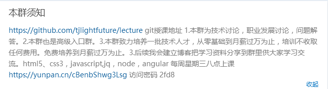
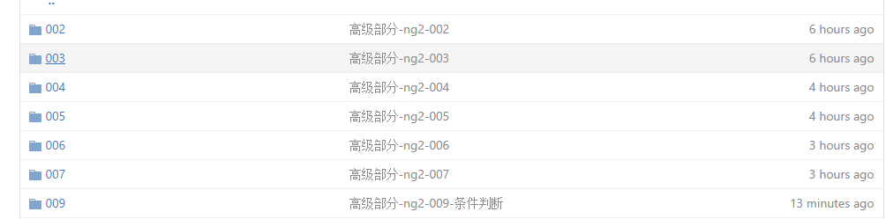

<!DOCTYPE html>
<html>
<head lang="en">
    <meta charset="UTF-8">
    <title></title>
    <script type="text/javascript" src="../angular2-beta-stack/dist/angular2.beta.stack.min.js"></script>
</head>
<body>
<lts-app></lts-app>
<script type="text/typescript">
    import {Component} from "angular2/core";
    import {bootstrap} from "angular2/platform/browser";
    @Component({
        selector:"lts-reader",
        properties:["readers"],
        template:`
            <div [ngSwitch]="readers">
                <template ngSwitchWhen="One">
                    
                </template>
                <template ngSwitchWhen="Two">
                    
                </template>
                <template ngSwitchDefault>
				<h1>使用分支逻辑</h1>
			</template>
            </div>
        `
    })

    class LtsReader{}

    @Component({
        selector:"lts-app",
        directives:[LtsReader],
        template:`
        <lts-reader readers="Two"></lts-reader>
        `
    })

    class LtsApp{}
    bootstrap(LtsApp);
</script>
</body>
</html>